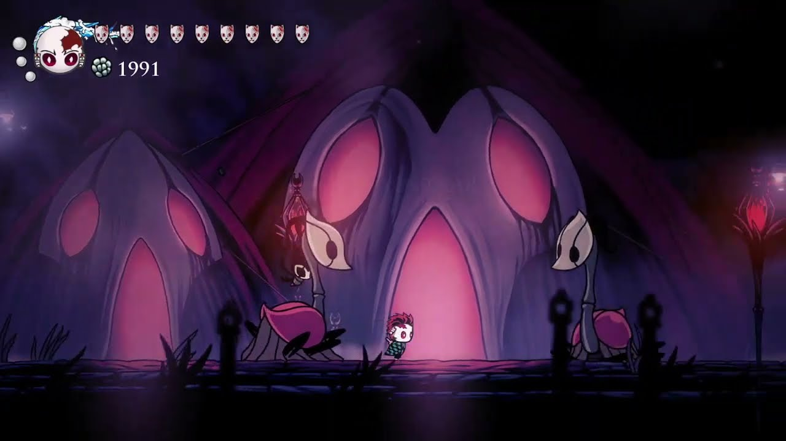
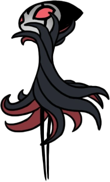
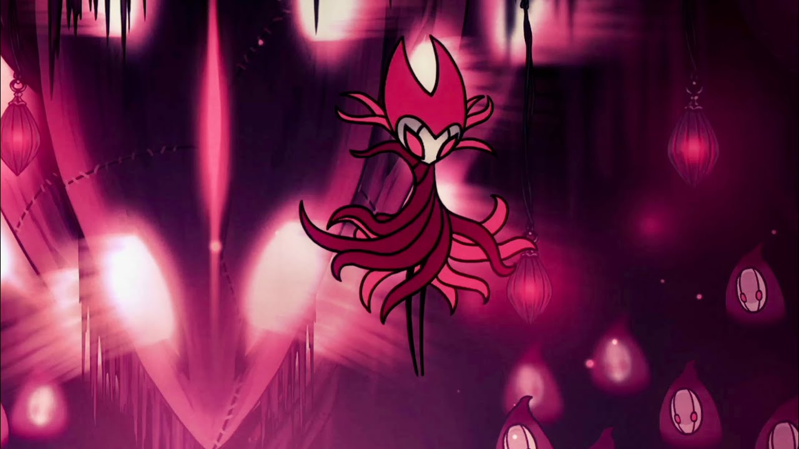

La Compañía de Grimm

El Maestro de la Danza
Grimm es el enigmático líder de la Compañía de Grimm, una feria ambulante que viaja a través de los reinos caídos para recolectar la llama de las pesadillas. Su llegada a Hallownest marca el inicio de un ritual antiguo destinado a alimentar al Corazón de la Pesadilla y asegurar el renacimiento de su linaje.
Cómo Iniciar el DLC
Debes dirigirte a los Acantilados Aulladores, encontrar el cadáver de un insecto grande en una pared oculta y golpear el farol con el Aguijón Onírico. Al encender la llama roja, las carpas aparecerán en Bocasucia.
Fase 1: El Maestro
El primer encuentro con Grimm es una coreografía perfecta. Él no pelea para matarte de forma bruta, sino para poner a prueba tus reflejos en una danza de fuego y acero.
- Embestida y Uppercut: Grimm se desliza y lanza bolas de fuego.
- Capa de Murciélagos: Lanza tres proyectiles ígneos a distancia.
- Pinchos de Suelo: Clava su capa en el suelo creando lanzas verticales.
- Modo Globo: Se infla y lanza fuego en todas direcciones (ocurre al 75%, 50% y 25% de vida).

Rey Pesadilla Grimm
El desafío definitivo. Al usar el Aguijón Onírico sobre Grimm mientras duerme, entras en el Corazón de la Pesadilla. Aquí, la velocidad se duplica y cada golpe cuesta 2 máscaras.

Cambios Mecánicos
- Rastro de Fuego: Sus ataques dejan llamas residuales en el suelo.
- Pilares de Llama: Invoca 4 pilares de fuego que te persiguen desde el suelo al cielo.
- Velocidad Extrema: Casi no hay tiempo para curarse entre ataques.
El Ritual Onírico
Vencer a NKG es completar el ritual. El Niño de Grimm absorberá al Rey y alcanzará su forma final, convirtiéndose en el compañero más poderoso del juego.
El Camino del Destierro
Si decides que el ritual es un ciclo de sufrimiento sin fin, puedes hablar con Brumm en Nido Profundo. Él te ofrecerá destruir el farol para desterrar a la Compañía de Hallownest para siempre.
Completar el Ritual
Enfrentas a NKG. El Niño de Grimm llega a su máximo nivel. Obtienes el amuleto del Niño completo.
Destierro
La compañía desaparece. El Niño de Grimm se pierde, pero obtienes el amuleto Melodía Descuidada (probabilidad de ignorar daño).